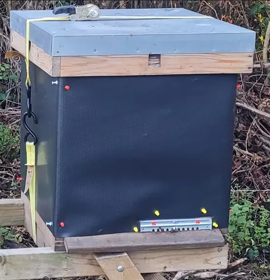

Rodent damage prevention
Mice in Beehives (UK) – Signs, Damage and How to Prevent It
Last updated: 1 May 2026

Mice can become a serious problem in beehives, particularly during autumn and winter. They are attracted by warmth, shelter and food, and once inside they can damage comb, contaminate frames and disturb the colony.
A strong colony can usually defend itself during the active season, but winter is different. Bees cluster tightly and may not defend the whole hive space, giving mice the opportunity to settle in unused areas of the box.
This guide explains how to recognise mice in your hive, what damage they cause, how mouse guards help and what to do if mice get inside.
Why mice enter beehives
Mice enter hives because they offer warmth, shelter, protection from predators and access to food. A hive can be especially attractive in cold weather because it is dry, enclosed and contains wax, pollen and honey residues.
They are most likely to enter in late autumn and winter when colonies are clustered and less defensive. If the entrance is large enough, a mouse can get inside and build a nest in the comb or unused hive space.
Signs of mice in a beehive
One of the first signs is often a strong, unpleasant mousey smell when the hive is opened. You may also find shredded comb, chewed wax, nesting material, grass, leaves, droppings or debris on the floor and frames.
Frames may look torn or hollowed out, especially in areas away from the cluster. In some cases, bees may still be present but pushed into a smaller area of the hive because the mouse has occupied part of the box.
Damage caused by mice
Mice can chew through comb to create nesting space, destroy brood frames, contaminate the hive with droppings and urine, and disturb the colony during winter.
Even if the colony survives, the damage can set it back significantly. Damaged comb may need to be removed or replaced, and contaminated frames should be assessed carefully before reuse.
When are mice most likely to be a problem?
Mice are most likely to become a problem in late autumn, winter and early spring. In late autumn they begin looking for shelter. In winter the colony is clustered and may be less able to defend the entrance or unused comb.
Early spring can also reveal damage that occurred during winter. A colony may survive but emerge weaker, with damaged comb, reduced usable space or extra stress.
Mouse guards and entrance size
A mouse guard is a simple physical barrier fitted across the hive entrance. It allows bees to pass through but prevents mice entering. It is one of the easiest and most effective ways to prevent mouse damage.
Mouse guards are usually fitted in autumn before cold weather sets in and before mice begin seeking winter shelter. Entrance reducers can also help, but the entrance still needs to allow normal bee movement and ventilation.
How to prevent mice entering your hive
Prevention is far easier than dealing with an infestation. Fit mouse guards before winter, reduce entrance size where appropriate, check entrances regularly and keep the apiary tidy to reduce hiding places.
Avoid leaving spare comb, feed spills or debris around the apiary. Rodents are more likely to explore hives where the surrounding area gives them cover and food opportunities.
What to do if mice are in your hive
If you find mice in the hive, remove the mouse and nesting material, clean or replace damaged frames and fit a mouse guard immediately. Check colony strength, stores and whether the bees have been pushed away from accessible food.
Work carefully to avoid chilling the colony, especially in cold weather. If the colony is alive but stressed, keep the inspection short and only do what is necessary at that time.
Can a colony survive mice damage?
Yes, strong colonies can recover if the damage is limited and dealt with quickly. The colony may need damaged frames removed, comb replaced and careful monitoring as the season starts.
Severe infestations can contribute to colony loss, especially in winter. If the colony is already weak, mouse disturbance may combine with starvation, cold stress or varroa-related weakness.
Common mistakes
The most common mistake is forgetting to fit mouse guards in autumn. By the time the damage is found, the mouse may already have chewed comb, contaminated frames and disturbed the colony.
Other mistakes include leaving entrances too large over winter, ignoring early signs such as smell or debris, and disturbing the colony too much in cold weather while trying to fix the problem.
How HiveTag can help
Logging seasonal checks and winter preparation in HiveTag helps ensure tasks like fitting mouse guards are not missed.
You can record entrance checks, winter preparation, colony strength, stores and follow-up tasks so each hive is ready before cold weather arrives.
Learn more: HiveTag.
Mice in Beehives FAQ
Bees may attack intruders, but in winter they are clustered and less able to defend the whole hive. This can allow mice to enter and settle.
Fitting a mouse guard before winter is the most effective prevention. Reducing entrance size and keeping the apiary tidy also helps.
Yes. Mice can live in unused parts of a hive, especially in winter when the colony is clustered and unable to defend all the space.
Mouse guards are usually fitted in autumn before temperatures drop and mice start seeking warm, sheltered places.
Image credits
Disease reference images on this page are courtesy of The Animal and Plant Health Agency (APHA), Crown Copyright.